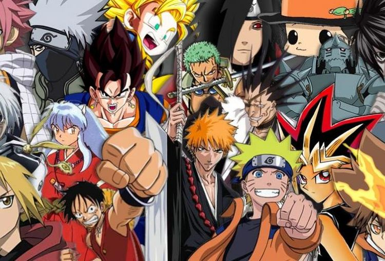

Ceremonia ceaiului
Este un ritual tradițional influențat de budismul Zen prin care ceaiul verde matcha sau „roua prețioasă lichidă” este preparat într-o manieră ceremonioasă de către o persoană inițiată și servit unui grup mic de oaspeți într-o atmosferă liniștită. În esența sa, ceremonia ceaiului
reprezintă expresia sintetică a aspectelor fundamentale ale culturii japoneze.
Samurai
Samurai este un termen care a fost folosit în Japonia pentru a desemna indivizi aparținând nobilimii militare. Cuvântul samurai este derivat din verbul japonez saburau, însemnând a servi. Samuraiul era literar servitorul unui nobil. Casta samurailor a fost desființată după Restaurația Meiji(1868).
Samuraiul de orice rang îl putea ucide fără să dea socotelă pe orice persoana inferioară lui ca grad social (țăranii, negustorii), după bunul lui plac, indiferent dacă era bărbat, femeie sau copil, indiferent de motiv sau chiar pentru a-și încerca tăișul sabiei. Se crede că sabia samuraiului (katana) era cea mai ageră din lume, chiar mai ageră decât celebra sabie de Damasc
În Japonia doar samuraiului îi era îngăduit să poarte arme. Oricine ataca un samurai era considerat a fi un răzvrătit și era executat pe loc. De asemenea oricine vedea un atac de nesupunere și nu informa autoritățile de îndată era omorât, iar pedeapsa sa cădea și asupra familiei sale.
Cireșul
Sakura este numele florii cireșului japonez. Florile sunt admirate pentru frumusețea lor, iar lemnul este întrebuințat pentru mobilă de înaltă calitate, sculptură sau pentru imprimatul stampelor.
In Japonia, sakura simbolizează mai degrabă natura efemeră a vieții.
Anime
Anime reprezintă orice film de animație produsă în Japonia sau originară din aceasta. La originea acestui gen stau benzile desenate japoneze numite manga Inițial anime-urile erau desenate manual, însă în ultimii ani tehnicile asistate de calculator practic s-au generalizat. Tehnicile anime sunt utilizate în seriale televizate, producții cinematografice și video, jocuri pentru computer, publicitate etc.

Gastronomie
Ingredientele principale ale bucătăriei japoneze tradiționale sunt: peștele și alte produse marine, zarzavaturile și orezul. Abundența produselor marine în apele care înconjoară Japonia și religia budistă (care este împotriva uciderii animalelor) au făcut ca japonezii să folosească carne, produse lactate, grăsimi animale etc. în mod mai redus.
Condimentele principale sunt produse din soia sau orez. Pentru a menține gustul original al ingredientelor, bucătăria japoneză nu prea folosește condimente iuți, ci mai mult plante aromatice sau wasabi, yuzu, ghimbir.